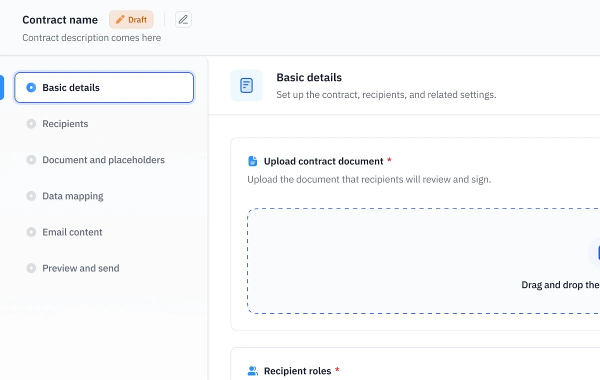
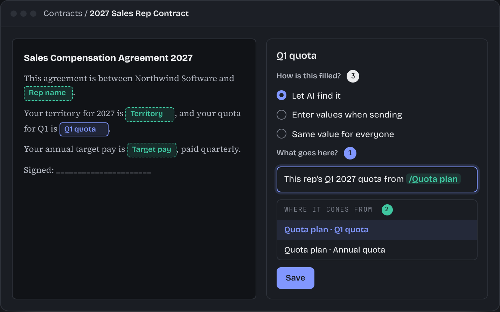
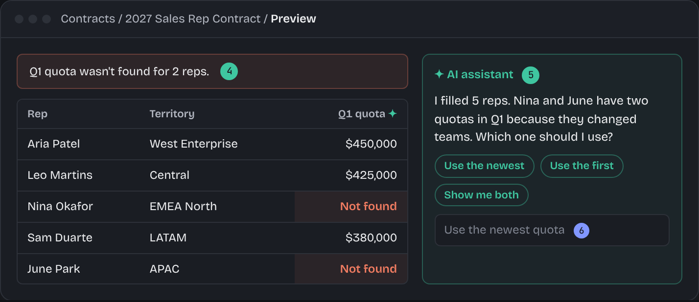
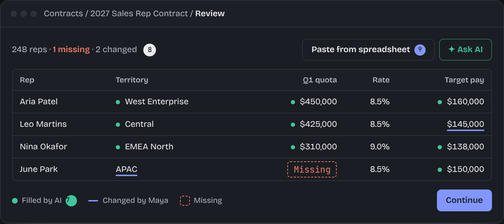
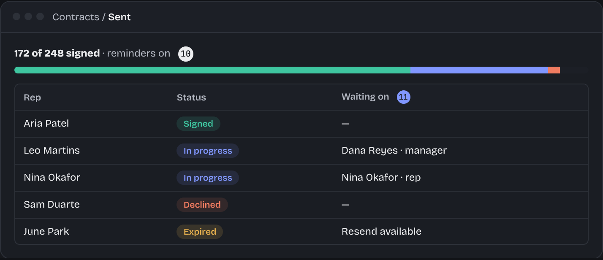

Simplifying contract management with AI
- My role
- Product Design · UX/UI
- Collaborators
- Akkshaya Varkhedi (PM) · Engineers
Contracts lets companies create, send, and manage personalized sales compensation agreements for their salespeople.
What started as an effort to simplify the existing DocuSign-based workflow eventually became a native contract management experience, with Eva, our AI assistant, helping reduce the manual work involved in preparing contracts.
01 / Understanding the problem
I started by going through the existing Contracts flow, reviewing customer feedback, and understanding how customers created and sent contracts.
Previously, Contracts used DocuSign, which was embedded within Everstage. Admins could upload a document and add fields that needed to be filled with each salesperson's information.
But creating the template was only half the work.
To send contracts, admins still had to:
- Set up the contract in DocuSign. Upload the document and add fields for each salesperson's information.
- Download the fields as a spreadsheet. Get a CSV containing all the fields that need to be filled.
- Manually prepare everyone's data. Collect each salesperson's information from different sources and fill in the spreadsheet, along with recipient emails and email content.
- Bring the data back into Everstage. Upload the prepared data as a Datasheet, which is basically a table containing all the information needed for the contracts.
- Load the data and send contracts. Select the Datasheet and send the contracts without previewing the completed documents.
The main problem was that most of this information already existed in Everstage. Yet admins had to prepare it manually and bring it back into the product.
They also had to enter recipient emails and email content manually. And there was no way to preview the completed contracts before sending them. If something was wrong, they had to cancel and resend them.
Understanding how customers worked
We also gathered inputs from the customer success, implementation, and solution architecture teams.
A few things became clearer:
- Recipients: The main recipient was usually the salesperson, with managers or compensation admins added depending on the customer.
- Reusing contracts: Customers often needed to send the same contract to new salespeople joining midway through the year.
- Email content: Some customers used the same email for everyone, while others needed different emails for different recipients.
- Contract data: Some information was already in Everstage, while other values needed to be entered manually.
This helped us understand that the problem wasn't just DocuSign, but also the amount of manual work involved in creating and sending contracts.
02 / Some of the approaches we explored
We tried a few approaches during the redesign. Some had to be reconsidered as we understood the use cases better.
One flow or reusable templates?
We initially explored combining contract creation and sending into a single flow.
But what if a new salesperson joined midway through the year and needed the same contract? Admins would have to recreate or copy the entire contract just to send it to one more person.
So we kept templates and sending separate, allowing admins to create a template once, reuse it for different groups of people, and track the contracts sent from it.

Figuring out how to fill contract details
This was one of the biggest challenges, and we didn't have a clear solution initially.
We first explored letting admins manually choose where each value should come from. But fetching something like a salesperson's sales target for a specific quarter could require several filters and calculations.
This made the setup complicated. We needed a simpler approach, and the AI capabilities being developed alongside the redesign opened up another possibility.

03 / Bringing AI into the workflow
Around this time, engineering was developing the Contracts AI agent.
Once Eva became capable of reliably generating data queries from natural-language instructions, we started exploring a different approach.
Instead of making admins configure every data source and filter, what if they could just describe the value they needed?
Eva could interpret the description, identify the relevant data, and generate a query to fetch values for each salesperson.
But this introduced another design problem.
How would admins know whether AI had fetched the right information? And what could they do if it hadn't?
A lot of the design work went into answering those questions.
04 / How the new experience works
Creating a reusable template
Admins can create a new template or clone an existing one, upload their document, and configure recipients, signing order, and reminders.
We also introduced ways to automatically assign recipients, like a salesperson's reporting manager or a fixed compensation admin, using information Everstage already has.
New experience

Previous experience
Letting Eva find the values
We used the native document editor developed by our CPQ team and adapted it for Contracts-specific data fields.
Admins can place placeholders and describe what each should contain in plain language.
For example, "Q2 quota from the New Business category."
Eva uses these instructions to generate a reusable query that fetches values from Everstage data.
We also added pre-mapped fields as starting points and guidance to help admins write better instructions.

Checking AI results before confirming
Admins can select sample salespeople and preview the values Eva has fetched for each placeholder.
If something looks wrong, they can chat with Eva, provide more context, or ask it to use a different data source.
Eva can also ask clarifying questions when it needs more information.
Admins can preview the populated document as well, checking both the values and the placement of placeholders.
Once confirmed, the query is saved with the template for future use.

Preparing and sending envelopes
When it's time to send contracts, admins select the primary recipients. Other recipients are automatically populated based on the rules configured in the template.
Eva then uses the saved query to fetch placeholder values for everyone.
Admins can review the values in a table, make corrections, and preview the contracts before sending.
We also simplified email customization around three customer needs: the same email for everyone, different emails by role, or unique emails for individual recipients.
After sending, admins can track the contracts and see whose action is pending.


05 / What happens when AI doesn't get it right?
This was one of the more interesting parts of the project for me.
Eva won't always return the right value. Sometimes it needs more context, sometimes the data doesn't exist, and sometimes the lookup itself fails.
We had to think through these cases rather than assuming AI would always work.
When Eva fetches the wrong value
Admins can ask Eva to use a different source or change how a value is calculated.
For example, they can ask it to divide the variable pay by 10 and regenerate the values.
When Eva can't fetch a value
We didn't want admins to depend entirely on AI.
They can manually edit values, copy and paste data from spreadsheets, or look up values from an existing Datasheet.
For bulk updates, we let them match records using recipient email addresses and validate the results before applying them.
We also accounted for cases like multiple matching records, rather than silently choosing a value.
When values become outdated
What if an admin prepares contracts but returns to send them a few days later?
The source data might have changed.
We introduced indicators for missing and outdated values, filters to find affected records, and options to refresh the data.
Admins can still proceed with missing values, but we warn them that those placeholders may appear blank in the final documents.
The idea was to make problems visible and give admins ways to resolve them without starting over.
06 / What changed with the redesign
The new experience brings contract creation, sending, signing, and tracking into Everstage.
Admins can now:
- Create reusable templates without DocuSign.
- Automatically populate recipients using existing relationships.
- Use Eva to fetch values instead of manually preparing everything in a CSV.
- Preview and correct values before sending contracts.
- Use manual alternatives when AI can't fetch the required information.
- Track the signing progress of their contracts.
The new Contracts experience was introduced through a phased rollout.
The recipient-facing signing experience was built by another team. Recipients can review, sign, and download their completed contracts directly through Everstage.
07 / What I took away
This project made me think more about what it means to design an experience involving AI.
The challenge wasn't just letting admins describe what they needed and having Eva fetch it.
It was also figuring out what happens when AI misunderstands something, returns incorrect information, or can't complete the task.
A lot of the work went into making sure admins could review what AI had done, correct it when needed, and still get their work done without depending entirely on it.